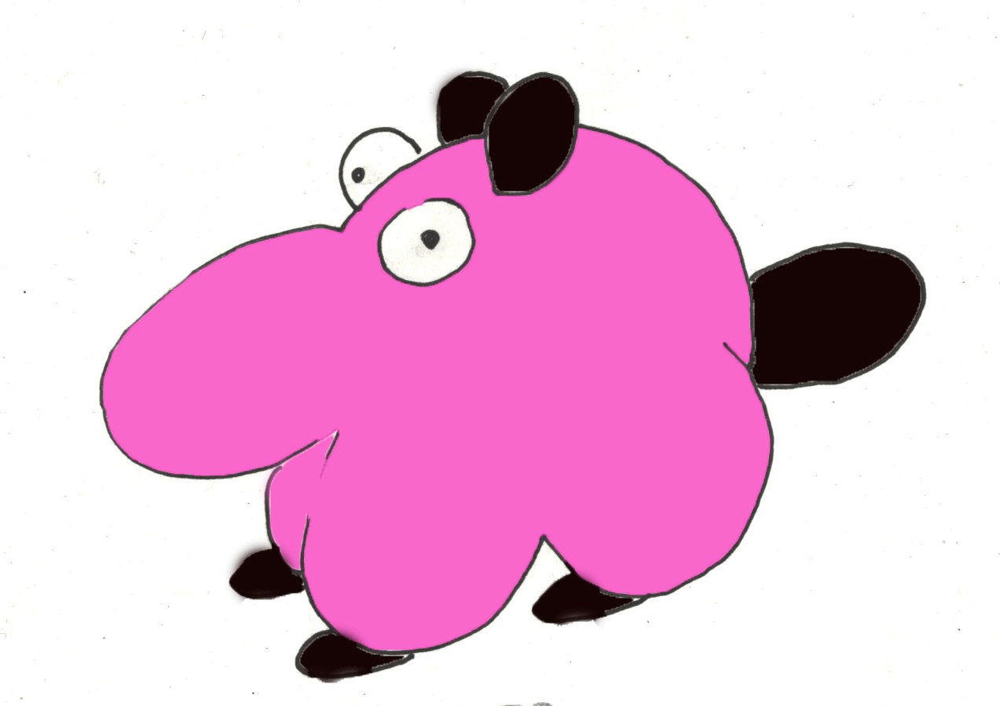

Hej, jeg hedder Afafa…
Afafa Lange.
Nu skal du bare høre om et spændende sted,
der ligger lige der, hvor Langeland også ligger.

Hej, jeg hedder Afafa…
Afafa Lange.
Nu skal du bare høre om et spændende sted,
der ligger lige der, hvor Langeland også ligger.
Du kan kun få adgang til det, hvis troldmanden Skumle Mumle eller Den gode Heks siger nogle trylleord, som jeg ikke kender. De ikke særlig glade for at åbne porten på klem. Kun sjældent får folk fra den almindelige langelandske verden lov til at komme ind i Magic Longland… ligesom beboerne normalt blot ønsker at være i deres eget lille kongerige, som hører under verdens største rige, der jo er fantasien rige. Vi er altså ret usynlige… men vi er her… spids øre og hør mere.
Studser du lidt over navnet. Det er engelsk og betyder magiske lange land. Da de danske vikinger for mange år siden var i England, var der en pige som blev forelsket i en ung troldmandslærling. Da han var færdiguddannet flyttede de til Langeland, hvor pigen kom fra… og troldmanden lovede hende at han ville give hende en magisk ø. Han var god til troldmandsjobbet, men elendig til at lære sprog, så han sagde altid Magic Longland… og sådan hedder det stadigvæk for navnet er blevet officielt. Det står med guldbogstaver på brevpapir og på specielle kort for troldkvinder og troldmænd kan man se det lille land. Der kan man også se flaget, læse om dyrene og planterne.
Som jeg lige sagde, så er Magic Longland et kongerige... eller som de siger, et monarki. Vi vælger selv vores konger og dronninger. Hvert andet år en konge, hvert andet en dronning. Hvis de ikke opfører sig ordentlig, mødes folk, og så finder vi en anden til jobbet. De skal være flinke og sparsommelige. Ikke noget med store armbevægelser, store biler og dyrt tøj. Deres job er at tage rundt og hilse på beboerne i ML og høre om de har det godt. Vi har delt øen op i seks hertugdømmer, og monarken tager hver uge rundt og snakker med hertugerne, der ved alt om, hvad der sker på deres lille plet… hertugerne er nemlig valgt af beboerne omkring dem… og de ta’r også rundt og lytter til, hvad der sker i krogene.
Hvert år holder vi De langelandske Lege. Vi kæmper i sportsgrene, der rimer på langt. Der er længdehop med samlede ben, spydkast, langbueskydning, pusterør, kast med lange lette genstande og med lange tunge genstande. De seks hertugdømmer stiller hvert med et hold af deres stærkeste folk til tovtrækning. Når legene er overstået stimler folk. Den nye konge eller dronning præsenteres så og mændene smider deres hatte så langt op i luften som muligt… nye konge eller dronning, siger jeg… hm, de sidste mange år har vi været så pokkers tilfredse med vores lille kongefamilie, at vi har valgt dem igen og igen… skiftevis til dronning og konge… gode mennesker siger jeg… de har to børn, prinsesse Smil og prins Nysgerrig.

Det er friske unger. Smil er kvik til at redde sin lillebor ud af kastanjerne, når han har været lidt for nysgerrig. Jeg har mange historier om de to, men dem må de så få senere. Nu skal du lige ha’ at vide, hvordan tingene fungerer her i Magic Longland.
Hertugerne mødes en gang om måneden ved et langbord. Her kan folk bare komme og drikke lidt hyldesaft eller te med hertugerne. Hvert hertugdømme har et stort bord, alle kan sidde ved. De skriftes til at komme hos hinanden, så alle har store lange borde. Der fortælles om stort og små. Er der problemer et sted, så finder de ud af, hvad man skal gøre. Der er altid nogle problemer i et land, men i Magic Longland, siger vi, at det ikke er problemerne, der er problemet, men måden man ser på problemet. Du kender sikkert det med, at man synes, man har et kæmpe stort problem… og så kommer der en ven, som viser en anden måde at se på tingene. Pludselig er der ikke rigtig noget problem mere. Sådan prøver ridderne om det lange bord også at være… og det går rigtig godt. Forresten hedder deres orden Den blå Orden. Magic Longland er omgivet af blåt hav. Når solen skinner bliver himlen ekstra blå, fordi der er vand omkring os. Der er et eller andet ved farven blå, ikke? Kender du den klare blå farve i en swimmingpool… er der nogen mere lækker farve? Når ridderne mødes, er de i poolblåt. Damerne har lange blå kjoler og mændene har lange blå jakker. Deres hatte er mørkeblå som himlen lige før den bliver sort.
Hvert hertugdømme har et speciale. Der har været diskuteret en del om hvad de forskellige skulle vælge. Her er nogle af de tinge folk kommer for at opleve. Hundenes hertugdømme. Her er alt hvad der har med hunde at gøre… hunde af alle slags, en stor hundemark, en hundeskov, et hundemuseum, der er alle mulige mærkelige hunderacer, figurer og malerier af hunde, hundemadsfabrik, hundeskole, hundehotel, foredrag og hundeshows.
En andet er kattenes hertugdømme… det ligger ikke lige op til hundenes. Her er det på samme måde… alt o katte.
Så der tech og makers hertugdømmet med bygningen hvor opfindere, makers og iværksætterne mødes. Der er maskiner og tech-udstyr af al mulig slags. Der er en højskole hvor folk kommer fra andre lande. Ideerne flyver højt her. Droner, robotter, talende maskiner… og alle mulige praktiske ting der gør hverdagen sjovere og lettere for beboerne i Magic Longland.
Der er også hertugdømmet Poesia, hvor sværmeriske sjæle nyder at komme. Her er små haverum med statuer, rindende vand, murafsnit med kærlighedsdigte. Forelskede kommer her og mange bliver gift her hvorefter de bor på små romantiske gæstehuse. Man ser par sidde og kikke ud over vandet i solnedgangen og man møder dem nyde skovene ro.
Der er noget for enhver smag og overalt dukker de forskelligt formede murstykker op i haver og åbne landskaber. Tusindvis af folk har malet på den åbne mur, har lavet mosaikker og sat små figurer ind og på væggene. Folk vender tilbage år efter år for at lave et maleri, kaste mønter i ønskebrønde og skaffe sig held. Intet sted i verden findes noget lignende.
På nogle måder vil du nok synes, vi er lidt sære her i ML, fx så spiser vi med pinde… hmmm, det er faktisk slet ikke så sært. Millioner af kinesere spiser med dem hver dag. Pindespiseriet begyndte med en kineser som kom på besøg for mange år siden. Dronningen dengang synes, at det var en fin måde at spise på. Så kunne folk sidde og nippe lidt til maden… og når de spiste popcorn, fik de ikke fedtede fingre… tilmed rimer pinde godt på Longland… Langeland. Alle syntes det var en god ide og derfor spiser vi alle sammen med pinde her… skærer maden ud i mindre bidder og haps, ind med det.
Nu vi er ved mad, så var her også engang en indianer på troldmandstræf. Han var en meget dygtig medicinmand fra Sydamerika. Sagde du planter til ham, så kunne han fortælle løs til dine øre var ved at falde af. Med sig havde han forskellige bønner og svampe. De groede fint her i landet, så dem fik vi lidt af. Han viste også, hvordan man kunne lave mad med dem. Når han badede, kom han ind med alle mulige slags tang. Han fortalte at han kunne tale med planterne, og han havde bedt dem om lov til at spise tang. En dag begyndte han at blande en masse tang med sine svampe og bønner. Så bad han folk smage.
Det var det mest lækre, de nogen sinde havde smagt, så siden den gang har vi levet af svampe, tang, frugt, grøntsager, bønner, rødder og nødder. Jeg ved godt det lyder lidt mærkeligt, men jeg siger dig, sådan en gang svampeburger er en himmelsk mundfuld. Hans svampe var selvfølgelig ikke giftige, men ude i naturen er der meget farlige svampe, og dem må du love mig aldrig nogen sinde at røre. Nogle er så giftige, at man dør af dem. Så husk det: aldrig spise svampe, du ikke kender… aldrig nogen sinde.
Undskyld, jeg fik vist slet ikke præsenteret mig… tja, jeg er jo bare Afafa Lange, en af beboerne her i Magic Longland. Jeg kan li’ at fortælle historier og tegne lidt. Måske vil I synes om at høre og se, hvad der sker her i landet. Jeg er vist nok en slags hund… og nok noget hen af en gravhund. Egentlig føler jeg mig slet ikke som en hund… der er nok også noget andet i mig. Her i landet er vi mange, der er lidt specielle, men vi forstår alle hinanden. Vi har samme sprog… spørg mig ikke hvordan det går til. Sådan er det bare. Det også nemmere på den måde. Vi kan snakke om tingene, og når man kan det, så har man det godt. Vi snakker meget, f eks snakker vi om vores store mur, som vi kalder Den åbne Kunstmur… eller Open Wall Project… engelsk er jo populært her på øen. Alle har bygget et stykke mur som bruger på en eller anden måde. Det kan lyde lidt dumt med en åben mur, men den betyder at alt der er godt må gerne komme ind til os, men det dårlige vil vi helst have bliver uden for. Den åbne kunstmur er kæmpe stor fordi alle har bygget hver deres stykke. Nogle har hængt planter på deres mur, andre har bier, nogle sætter solceller. Et sted er der citater, et andet stede vittigheder… her går folk hen når de lige trænger til en god griner. Et sted er murene træningsmure, hvor folk kravler, aser og maser… og sveder. Der hvor Lejbølle ligger har nogen lavet deres mure om til legepladsmure og kaldt det Legebølle. Her er et Legoværksted hvor folk kan bygge mure i Legoklodser og der er rutsjebaner, slyngtove, svævebaner, hoppeborge, gynger, vipper, fodboldsmure, tennismure, freesbeebaner, og meget mere.
Beboerne i Magic Longland inviterer folk fra udefra til at besøge dem, og når folk kommer, kan de få et års held hvis de dekorerer et stykke mur med et maleri, en mosaik eller sætter en figur ind i en mur. Il sidst kaster de en mønt i en ønskebrønd. På den måde støtter de pasning af den åbne kunstmur… og så får de et helt år med held i sprøjten. Det kan alle vel bruge, ikke? Det siges at mange har vundet i lotterier efter at have besøgt Magic Longland og lavet et billede. Efterhånden er alle murene fyldt med billeder og udsmykninger, og turister fra alle andre magiske lande kommer på besøg.
Nå børn, nu får I ikke mere her i første omgang. Vend tilbage til siden, så skal I høre mere om Magic Longland. Der er meget, meget mere jeg skal fortælle jer. For I skal have lidt at lave har jeg lavet nogle tegninger af beboerne her i landet. Derfor får I her første afsnit af Afafas Malebog.